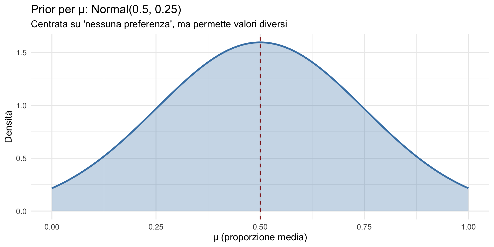
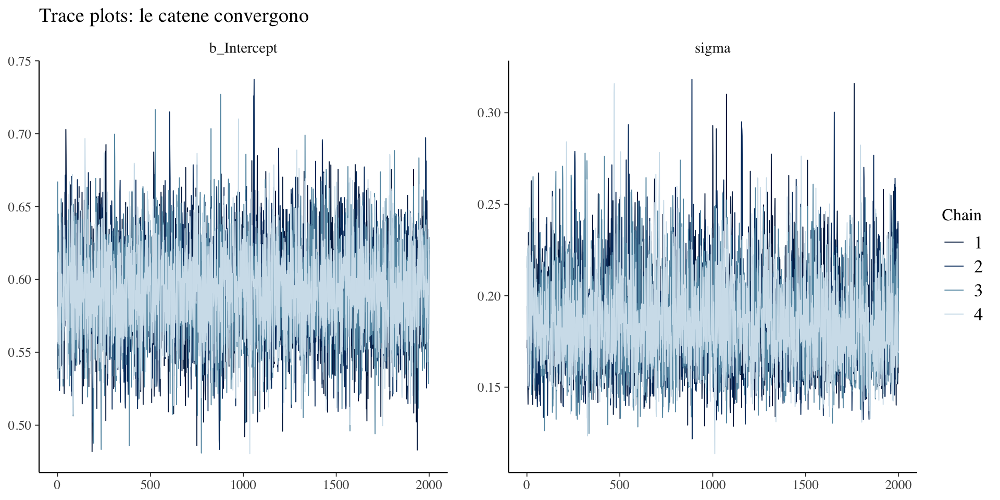
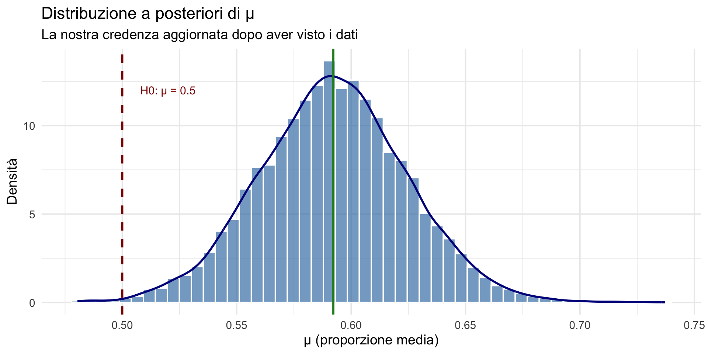
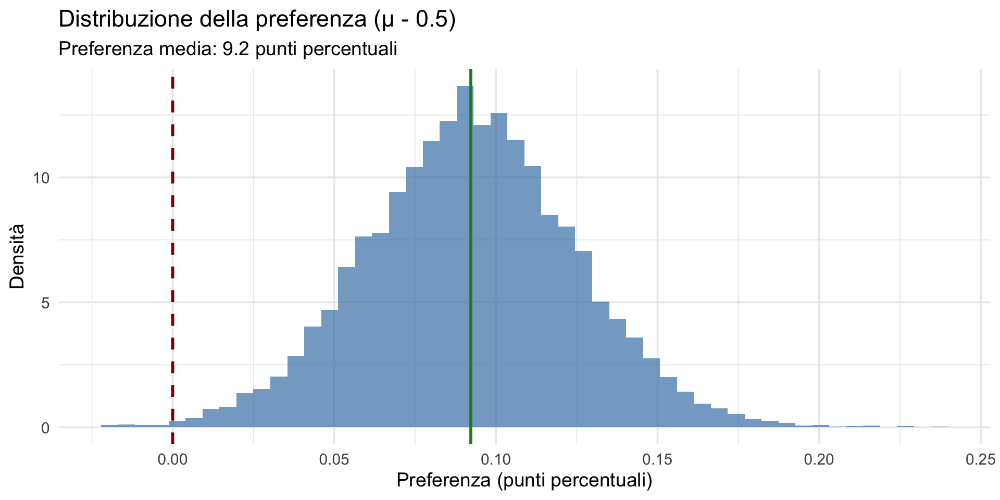
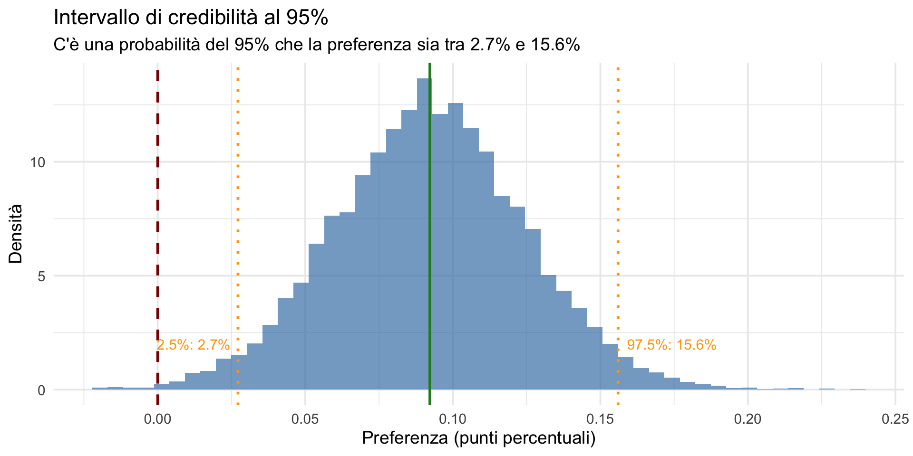
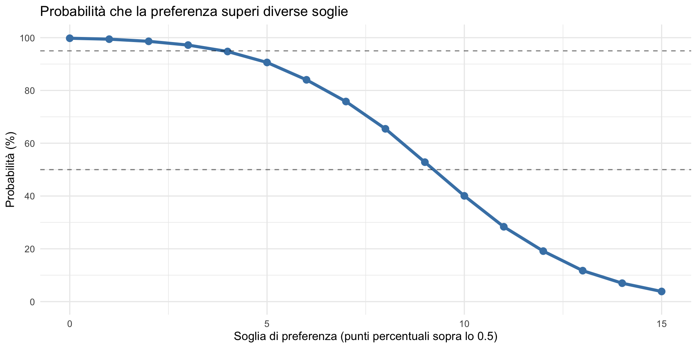
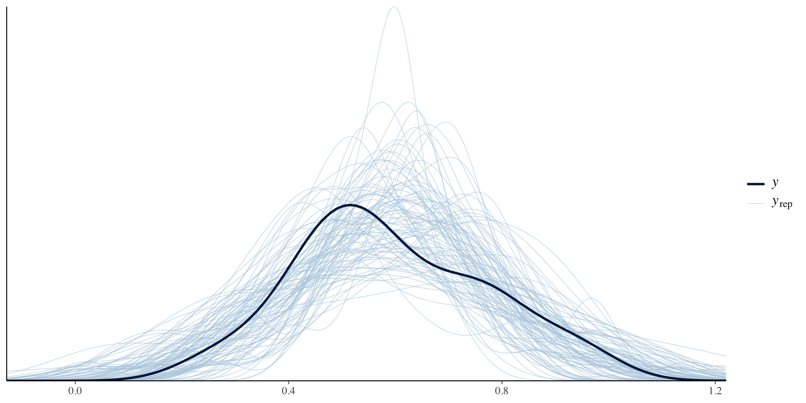
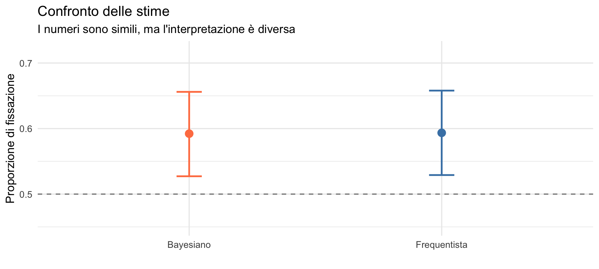
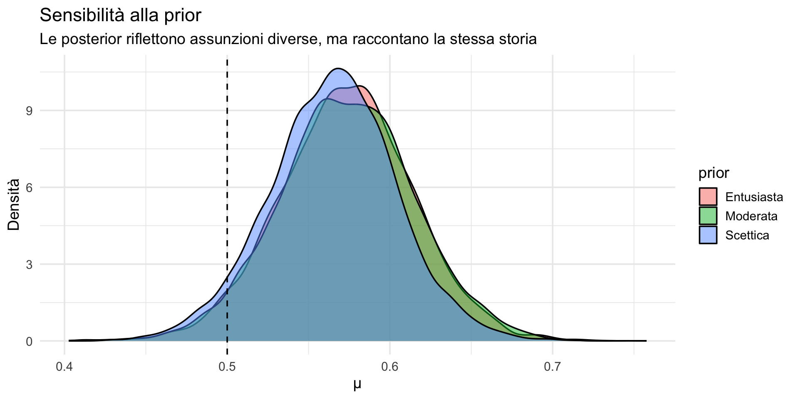

Esercitazione pratica
Analisi completa di un dataset psicologico — Segmento 2
![]()
17 febbraio 2026
Cambiare la domanda, non i dati
Dove eravamo
Nel Segmento 1 abbiamo analizzato lo studio di Mehr et al. (2016) con l’approccio frequentista:
- \(t\)(31) = 2.96, \(p\) = 0.006,
- IC 95%: [0.53, 0.66],
- conclusione: “effetto significativo”.
Ma abbiamo visto che questa risposta non soddisfa le domande che ci interessano come psicologi. Ora cambiamo prospettiva.
La domanda bayesiana
Non chiediamo più:
Quanto sono incompatibili i dati con \(H_0\)?
Chiediamo:
Quanto sono plausibili i diversi valori di \(\mu\), dopo aver visto i dati?
Questa è la domanda che il genitore nello studio vuole sentirsi rispondere. Ed è la domanda che l’approccio bayesiano (Lezione 17: prior, likelihood, posterior) ci consente di formulare direttamente.
Parte 1: l’analisi bayesiana
Il prior: non è un “trucco”, ma un’assunzione esplicita
Il prior non serve a forzare i dati verso una conclusione prestabilita né a confermare pregiudizi.
Serve invece a rispondere a una domanda inevitabile in qualunque processo di modellazione:
quali valori del parametro erano plausibili prima di osservare questi dati?
Ignorare questa domanda non la elimina. L’alternativa a dichiarare esplicitamente un prior è semplicemente avere comunque delle assunzioni — ma implicite.
Un prior debole ≠ un prior neutro
Anche un’affermazione apparentemente innocua come
“\(\mu\) è probabilmente compreso tra 0 e 1”
è già un’assunzione informativa e sostanziale.
Il vantaggio del paradigma bayesiano non è l’assenza di assunzioni, ma il fatto di renderle esplicite,
mentre nell’approccio frequentista esse restano spesso implicite, distribuite tra modello, procedura e interpretazione.
Anche l’approccio frequentista poggia su assunzioni implicite
Se il bayesiano dichiara il prior, il frequentista opera comunque sotto una serie di presupposti che raramente vengono messi in primo piano:
- Il modello probabilistico è corretto — ad esempio, che i dati provengano da una distribuzione normale.
- La procedura di campionamento è “ideale” — campione casuale, privo di bias di selezione.
- L’inferenza è pre-dati — la validità del valore-\(p\) si fonda su un’idea di campionamento ripetuto prima di osservare i dati.
- Non esiste informazione esterna rilevante — qualsiasi conoscenza pregressa viene ignorata.
Rendere esplicite le assunzioni è un vantaggio epistemico: sapere cosa si sta assumendo rafforza la solidità delle conclusioni.
Specificare il modello bayesiano
Definiamo un modello generativo per i dati:
\[ y_i \sim \text{Normal}(\mu, \sigma) \]
e specifichiamo le distribuzioni a priori per i parametri:
\[ \mu \sim \text{Normal}(0.5, 0.25) \] \[ \sigma \sim \text{Half-Cauchy}(0, 1) \]
Interpretazione della prior per \(\mu\)

- Centratura: 0.5 rappresenta lo scetticismo iniziale (“nessuna preferenza sistematica”).
- Dispersione: deviazione standard di 0.25 permette valori moderatamente diversi.
- Trasparenza: esplicita formalmente la conoscenza iniziale prima di osservare i dati.
Le assunzioni del modello
- Ogni bambino produce una proporzione osservata.
- Le osservazioni variano attorno a una media \(\mu\) con deviazione standard σ.
- La variabilità è descritta da una distribuzione Normale.
Stiamo assumendo un modello generativo che descrive come i dati potrebbero essere stati prodotti. È la stessa logica vista nelle Lezioni 22–23 con le prior predictive checks.
Nota sulla scelta della distribuzione
- Usiamo la
Normalcome approssimazione (\(n\) moderato, valori non estremi), per coerenza con le scelte dell’articolo originale.
- In alternativa, per proporzioni sarebbe più appropriata una distribuzione Beta (supporto [0,1]).
- Questa scelta illustra un punto importante: tutte le analisi statistiche comportano compromessi.
Implementazione con brms
Ricordate: il codice è solo l’implementazione tecnica,
il modello è l’insieme delle assunzioni concettuali che abbiamo specificato.
In brms il prior su sigma è applicato sul dominio positivo: è di fatto una half-Cauchy.
Diagnostica: convergenza delle catene MCMC

Diagnostica: \(\hat{R}\)
\(\hat{R} \approx 1.00\) → le catene MCMC hanno raggiunto convergenza,
possiamo considerare i campioni rappresentativi della distribuzione a posteriori.
La distribuzione a posteriori di \(\mu\)
Media a posteriori: 0.592 DS a posteriori: 0.032 CrI 95%: 0.527 - 0.656 Visualizzazione

Questo è il risultato bayesiano
Non un singolo valore puntuale.
Non solo un intervallo.
L’intera distribuzione a posteriori.
Tutto ciò che possiamo affermare sul parametro \(\mu\), tutta la nostra incertezza aggiornata, è rappresentata da questa distribuzione. Nella Lezione 20 avevamo introdotto l’intervallo di credibilità — ora ne vediamo la potenza in un contesto reale.
Estensione: un modello Beta (più coerente con proporzioni)
Per variabili tra 0 e 1, la Beta è più appropriata della Normale.
- Ma attenzione: nel modello Beta in
brm()la media è su scala logit.
Useremo questo modello come controllo di robustezza:
se le conclusioni restano simili, il risultato è più convincente.
# "squeeze" per evitare problemi se ci sono valori 0 o 1
n <- length(y)
y_beta <- (y*(n - 1) + 0.5) / n
fit_beta <- brm(
y_beta ~ 1,
family = Beta(link = "logit"),
data = data.frame(y_beta = y_beta),
prior = c(
prior(normal(0, 1), class = "Intercept"), # logit scale: 0 => mu=0.5
prior(exponential(1), class = "phi")
),
iter = 4000, chains = 4, seed = 123,
backend = "cmdstanr",
silent = 2, refresh = 0
)Esaminare i risultati
Dato che il coefficiente del modello (in questo caso, l’intercetta) si trova su una scala logit \([-\infty, + \infty]\), dobbiamo convertire il risultato sulla scala delle probabilità (da 0 a 1).
Per fare questo usiamo la funzione R plogis(), ovvero
\[ \text{logit}^{-1}(x) = \frac{e^x}{1 + e^x} = \frac{1}{1 + e^{-x}}. \]
[1] 0.588984 2.5% 50% 97.5%
0.5186981 0.5892510 0.6556112 Risultato: la probabilità a posteriori media è 0.589, con un intervallo di credibilità al 95% che va da 0.519 a 0.656.
Risultato (modello Beta): \(\mu\) sulla scala originale
mean CrI 2.5%.2.5% CrI 97.5%.97.5% P(mu>0.5)
0.5889840 0.5186981 0.6556112 0.9932500 Il modello Beta verifica (o mette in crisi) la robustezza delle conclusioni rispetto alle assunzioni distributive.
Conclusione della Parte 1
L’analisi bayesiana ci fornisce:
- una distribuzione completa di credibilità per i parametri;
- probabilità dirette per ipotesi di interesse (es. P(\(\mu\) > 0.5));
- trasparenza completa su tutte le assunzioni del modello.
Il confronto tra modello Normale e Beta illustra un principio fondamentale:
diverse assunzioni modellistiche possono portare a conclusioni leggermente diverse — ed è importante esserne consapevoli.
Parte 2: risposte alle domande del ricercatore
Le domande che uno psicologo si pone davvero
Ricordate il genitore che chiede: “cantare al mio bambino lo aiuta?”
Ora possiamo rispondere alle domande che contano:
- I bambini preferiscono la melodia familiare? (direzione)
- Di quanto preferiscono? (entità)
- Quanto siamo sicuri? (incertezza)
- L’effetto è clinicamente rilevante? (decisione)
- Cosa ci aspettiamo per un nuovo bambino? (predizione)
Domanda 1: “I bambini preferiscono la melodia familiare?”
Con l’approccio bayesiano possiamo calcolare direttamente questa probabilità:
P(μ > 0.5 | dati) = 0.9978 Interpretazione diretta
C’è il 99.8% di probabilità che i bambini preferiscano la melodia familiare.
Questa è esattamente la domanda che volevamo porre!
Confronto con il frequentismo
| Domanda | Frequentista | Bayesiano |
|---|---|---|
| I bambini preferiscono la melodia? | p = 0.06 (NON è questa probabilità!) | P(μ > 0.5 | dati) = 82% (è esattamente questa la probabilità!) |
| Nota: Il valore-p non risponde alla domanda sostanziale; la probabilità bayesiana sì. |
Il valore-\(p\) non è la probabilità che esista una preferenza.
Nel modello bayesiano possiamo calcolare direttamente la probabilità di un’affermazione sostanziale di interesse, ad esempio:
- P(μ > 0.5 | dati, modello, prior) — preferenza generica,
- P(μ > 0.55 | dati, modello, prior) — preferenza più marcata.
Ad esempio, nel nostro caso:
- P(μ > 0.50 | dati) = 82%;
- P(μ > 0.55 | dati) = 67%.
Le probabilità bayesiane sono condizionate a modello e prior (che dichiariamo esplicitamente), rendendo le assunzioni trasparenti e discutibili.
Domanda 2: “Di quanto preferiscono?”

Cosa ci dice questo grafico?
- L’effetto medio è di circa 9.2 punti percentuali sopra lo 0.5 (il caso di nessuna preferenza)
- L’intera distribuzione è spostata verso destra
- Possiamo quantificare l’incertezza: qual è l’intervallo che contiene il 95% della distribuzione?
Quantificare l’incertezza sull’entità

Confronto con l’approccio frequentista
| Domanda | Frequentista | Bayesiano |
|---|---|---|
| “Di quanto preferiscono?” | d = 1.06 (effect size) | Distribuzione completa della preferenza |
Cosa otteniamo in più con l’approccio bayesiano?
- Una risposta graduale, non solo “significativo/non significativo”.
- L’intervallo di credibilità: possiamo dire che c’è il 95% di probabilità che la preferenza sia tra 2.7% e 15.6%.
- La probabilità di effetti clinicamente rilevanti: ad esempio, P(preferenza > 5%) = 90.6%.
Perché questa è una risposta migliore?
Frequentista
- “C’è un effetto statisticamente significativo (p = 0.04)”.
- Ma non dice quanto è grande l’effetto.
- Il \(d\) di Cohen è solo una stima puntuale.
Bayesiano
- “La preferenza media è di 9.2 punti percentuali”.
- “Con una probabilità del 95%, la preferenza è tra 2.7% e 15.6%”.
- “C’è una probabilità dell’90.6% che la preferenza superi il 5%”.
La differenza chiave:
l’approccio bayesiano fornisce una risposta diretta alla domanda del genitore, quantificando quanto è grande l’effetto e con che incertezza possiamo giungere a tale conclusione.
Cosa ci dice questo per il genitore?

Risposta per il genitore:
“Possiamo essere abbastanza sicuri che il tuo bambino preferisca la melodia familiare, con una preferenza media di circa 9.2 punti percentuali. C’è il 90.6% di probabilità che questa preferenza sia clinicamente rilevante (oltre il 5%).”
Domanda 3: “Quanto siamo sicuri?”
L’intervallo di credibilità bayesiano ha un’interpretazione diretta (Lezione 20):
CrI 95%: 0.527 - 0.656 Interpretazione
C’è il 95% di probabilità che il vero valore di \(\mu\) sia compreso tra 0.53 e 0.66.
Questa interpretazione non è valida per l’IC frequentista!
Due frasi a confronto
(Bayesiano) “C’è il 95% di probabilità che \(\mu\) sia tra 0.53 e 0.66.”
(Frequentista) “Nel lungo periodo, il 95% degli intervalli costruiti in questo modo contiene \(\mu\).”
L’errore comune è applicare l’interpretazione bayesiana all’IC frequentista.
Una diversa interpretazione della probabilità
La distinzione fondamentale risiede nel concetto di probabilità:
- nell’inferenza bayesiana, il parametro è considerato una variabile aleatoria descrita da una distribuzione;
- nell’inferenza frequentista, invece, il parametro è una costante fissa e incognita, e la probabilità è interpretata come la frequenza relativa al ripetersi dell’esperimento casuale.
Perché questo è importante per lo psicologo?
Perché ora possiamo:
- parlare del parametro in termini di probabilità,
- prendere decisioni graduali (non solo sì/no),
- fare predizioni realistiche per i casi individuali.
Come abbiamo visto nella Lezione 26, questa capacità di passare dal gruppo all’individuo è cruciale per la pratica clinica.
Domanda 4: “L’effetto è clinicamente rilevante?”
Supponiamo che una preferenza di almeno 5 punti percentuali (\(\mu\) > 0.55) sia “clinicamente rilevante”:
P(μ > 0.55 | dati) = 0.906 Nota
C’è l’90.6% di probabilità che l’effetto sia clinicamente rilevante.
Questa è una domanda a cui è impossibile rispondere nel framework frequentista.
Domanda 5: “Cosa ci aspettiamo per un nuovo bambino?”
La domanda fondamentale qui non è più «qual è la media di gruppo?» ma:
Dato ciò che abbiamo imparato, quali valori potremmo aspettarci di osservare per un nuovo bambino?
Questa è esattamente la funzione della distribuzione predittiva a posteriori: combina l’incertezza sui parametri (la posterior su \(\mu\) e \(\sigma\)) con la variabilità individuale per dare una previsione sull’osservazione futura \(y_{\text{new}}\).
Cosa calcoliamo (e perché conta)
- La posterior predictive descrive la variabilità attesa di una singola osservazione futura: include sia l’incertezza sulla media di popolazione sia la variabilità tra bambini.
- Un intervallo predittivo (PI) è quindi più largo del CrI su \(\mu\), perché deve coprire anche la variabilità individuale.
- Per decisioni cliniche o comunicazione ai genitori è spesso più utile riportare il PI che l’intervallo sul parametro di gruppo.

Interpretazione
“Per un nuovo bambino, la nostra analisi prevede tipicamente una proporzione di fissazione al cantante della melodia familiare compresa fra 0.28 e 0.9 (90% PI). C’è circa il 69% di probabilità che un nuovo bambino mostri una preferenza generale (µ > 0.5) e il 59% di probabilità che questa preferenza sia almeno del 5% (cioè clinicamente rilevante).”
Si noti che l’intervallo predittivo è straordinariamente ampio: copre praticamente quasi tutto lo spazio parametrico possibile.
È interessante notare il contrasto con l’inferenza sul parametro di gruppo: sebbene i risultati a livello di gruppo (ad esempio, la media \(\mu\)) possano essere stimati con relativa precisione — offrendo una forte certezza “frequentista” sulla tendenza centrale — le predizioni a livello individuale rimangono estremamente incerte.
- Questa discrepanza è proprio la manifestazione pratica della distinzione tra incertezza sul parametro e variabilità individuale (Lezione 25).
- L’ampiezza dell’intervallo predittivo suggerisce che, accanto a un effetto medio ben identificato, esistono sostanziali differenze individuali tra bambini.
- In altre parole, la variabilità tra soggetti (indicizzata dalla deviazione standard \(\sigma\)) è tale da rendere ogni nuovo individuo potenzialmente molto diverso dalla media di gruppo.
Cosa comunica (e cosa NON comunica) il PI
- Comunica la variabilità che un genitore può effettivamente osservare: quanto ragionevolmente ci si può aspettare che il comportamento di un singolo bambino differisca dalla media di gruppo.
- Non comunica la probabilità che la media di popolazione sia > 0.5 (quella è P(µ>0.5) e va riportata separatamente).
- Poiché il PI include la variabilità individuale, è spesso molto più ampio del CrI su µ: questo sottolinea che una forte stima della media non implica previsioni precise per singoli individui.
Nota finale
Questa distinzione tra incertezza sul parametro e variabilità individuale è cruciale nella pratica clinica: l’approccio Bayesiano ci fornisce entrambe le informazioni — “quanto abbiamo imparato sulla media” (posterior su \(\mu\)) e “quanto può variare un singolo bambino” (posterior predictive).
Entrambe le informazioni dovrebbero entrare nella comunicazione con i genitori, clinici e lettori del report dello studio.
Sintesi delle risposte bayesiane
=== SINTESI DELL'ANALISI BAYESIANA ===1. P(preferenza per melodia familiare): 99.8 %2. Preferenza media stimata: 0.092 ( 9.2 punti %)3. CrI 95% per μ: [ 0.527 , 0.656 ]4. P(effetto rilevante, μ > 0.55): 90.6 %5. P(effetto nullo o negativo, μ ≤ 0.5): 0.2 %Predizioni per un nuovo bambino
=== PREDIZIONI PER UN NUOVO BAMBINO (modello gaussian) ===
Mean predittiva: 0.592
SD predittiva: 0.19
PI 90%: [ 0.279 , 0.904 ]
PI 95%: [ 0.215 , 0.966 ]
P(y_new > 0.5) = 69 %
P(y_new > 0.55) = 59 %=== PREDIZIONI PER UN NUOVO BAMBINO (modello Beta) ===
PI 90% (Beta): [ 0.23 , 0.901 ]
P(y_new > 0.5) (Beta) = 66.8 %
P(y_new > 0.55) (Beta) = 58.8 %Parte 3: confronto epistemologico
Le due conclusioni a confronto
Frequentista
t( 31 ) = 2.96 p = 0.06 IC 95%: [ 0.53 , 0.66 ]Conclusione: “Rifiutiamo \(H_0\)”
Bayesiano
P(μ > 0.5 | dati) = 82 %CrI 95%: [ 0.53 , 0.66 ]Preferenza: 9 punti %Conclusione: “Forte evidenza per la preferenza”
Cosa cambia tra le due interpretazioni?

| Aspetto | Frequentista | Bayesiano |
|---|---|---|
| Cosa quantifica | P(dati | \(H_0\)) | P(parametri | dati, modello) |
| Parametro | Fisso (sconosciuto) | Ha una distribuzione |
| Intervallo | Proprietà della procedura (IC) | Probabilità diretta (CrI) |
| Decisione | Binaria (sig/non sig) | Graduale (probabilità su quantità) |
| Assunzioni | Spesso implicite | Esplicite (prior + likelihood) |
Quando i due approcci divergono
Nel caso presente, i risultati numerici sono simili perché:
- campione moderato (n = 32);
- prior debolmente informativa;
- effetto abbastanza chiaro.
Ma le interpretazioni sono radicalmente diverse:
- Frequentista: “i dati sono incompatibili con \(H_0\)”.
- Bayesiano: “c’è il 82% di probabilità che ci sia una preferenza”.
Un caso di studio: risultato marginale
Ora costruiamo uno scenario in cui:
- l’effetto esiste ma è debole,
- il campione è piccolo,
- il valore-\(p\) è appena sopra 0.05.
Questa situazione è molto comune nella ricerca psicologica — e nella lettura critica della letteratura che farete come professionisti.
Simulazione dei dati
Parametri della simulazione:
- vero \(\mu\) = 0.55 (preferenza di 5 punti percentuali),
- n = 20 bambini,
- σ simile a quello osservato.
Analisi frequentista sul dataset simulato
p-value: 0.068 Con questi parametri si ottiene tipicamente un risultato del tipo \(p\) ≈ 0.05–0.10, quindi non significativo per \(\alpha\) = 0.05.
Conclusione frequentista
\(p\) = 0.068
→ Risultato non statisticamente significativo.
→ Non possiamo rifiutare \(H_0\).
→ Risultato etichettato come “negativo”.
Analisi bayesiana sullo stesso dataset
Usiamo lo stesso modello di prima, con lo stesso prior.
La quantità chiave: P(\(\mu\) > 0.5 | dati)
Calcoliamo la quantità di interesse:
Conclusione bayesiana
P(\(\mu\) > 0.5 | dati) = 96.1%
→ Evidenza sostanziale per una preferenza.
→ Non certezza, ma l’informazione è utile.
Lo stesso dataset, due letture
Frequentista
p = 0.068
- Non supera la soglia α = 0.05
- Non possiamo rifiutare \(H_0\)
Conclusione formale:
“Risultato non significativo”
Bayesiano
P(\(\mu\) > 0.5 | dati) = 96.1%
- L’effetto è più probabile che no
- L’incertezza è quantificata
Conclusione sostanziale:
“Evidenza sostanziale per una preferenza”
Notate bene cosa è diverso
I dati sono identici. La stima della media è identica.
Quello che cambia è:
- cosa viene considerato una “conclusione”;
- cosa viene considerato “informazione utile”.
Cosa sta succedendo davvero?
L’effetto è piccolo, stimato con incertezza e compatibile sia con un effetto debole sia con l’assenza di effetto.
Il valore-\(p\) risponde solo alla domanda:
“Quanto sono rari questi dati se μ = 0.5?”
L’approccio Bayesiano risponde invece alla domanda:
“Quanto è plausibile che μ > 0.5, dati questi dati?”
Sono domande diverse.
Dove il frequentismo si ferma
Il framework NHST richiede una decisione:
- superi la soglia → “significativo”
- non la superi → “non significativo”
Non esiste una categoria intermedia formalmente riconosciuta.
Quando l’evidenza è marginale, il sistema è costretto a collassare un gradiente in un’etichetta binaria.
Dove l’approccio bayesiano continua
L’approccio bayesiano non deve prendere una decisione binaria.
Può dire:
- c’è il 58% di probabilità che l’effetto sia positivo;
- c’è il 72% di probabilità che superi una soglia clinica;
- c’è il 18% di probabilità che sia nullo o negativo.
L’incertezza non viene nascosta. Viene misurata.
Il punto non è “chi ha ragione”
Non è una gara.
È una differenza strutturale:
- Il frequentismo controlla l’errore nel lungo periodo (SE l’analisi viene fatta in un certo modo – ma nella pratica questo non avviene).
- Il metodo bayesiano aggiorna il grado di credenza alla luce dei dati.
Quando l’evidenza è forte, i due approcci convergono. Quando l’evidenza è debole o marginale, emergono le differenze.
- Ed è proprio lì che la scelta epistemologica diventa importante.
- Sono queste le circostanze in cui sbagliare produce le coseguenze peggiori (pensiamo alla crisi della replicabilità).
Una domanda legittima
Se il risultato bayesiano dipende dalla prior, allora:
Quanto stiamo imparando dai dati? Quanto dipende dalle nostre assunzioni iniziali?
Questa non è un’obiezione. È il cuore dell’inferenza bayesiana.
La domanda giusta da fare
Un risultato è:
- robusto, se prior ragionevoli portano a conclusioni simili;
- fragile, se piccole variazioni della prior cambiano radicalmente l’esito.
La sensibilità alla prior non è un difetto.
È un indicatore di quanto i dati siano informativi.
Robustezza: cosa succede se cambiamo prior?
Un risultato è robusto se prior diverse, ma plausibili, portano a conclusioni simili.
Un risultato è sensibile alla prior se prior diverse portano a conclusioni diverse.
La sensibilità alla prior non è un difetto. È informazione sulla forza dei dati.
Quanto contano davvero le assunzioni iniziali?
Stesso dataset simulato. Stesso modello.
Cambiamo solo le assunzioni iniziali su \(\mu\). Distinguiamo tra una prior
- scettica: Normal(0.5, 0.10);
- moderata: Normal(0.5, 0.25);
- entusiasta: Normal(0.55, 0.15).
Analizziamo come la distribuzione a posteriori del parametro \(\mu\) venga modificata dall’adozione di ciascuno dei tre prior precedentemente considerati.
Cosa cambia davvero?

Come leggere questo grafico
- Le posterior non sono identiche → le assunzioni contano.
- Ma tutte assegnano un’alta probabilità a \(\mu\) > 0.5 → i dati sono informativi.
I dati non cancellano la prior. La aggiornano.
# A tibble: 3 × 4
prior `P(mu>0.5)` `CrI 2.5%` `CrI 97.5%`
<chr> <dbl> <dbl> <dbl>
1 Scettica 0.949 0.485 0.642
2 Moderata 0.963 0.491 0.656
3 Entusiasta 0.963 0.493 0.653- Se la conclusione (es. P(\(\mu\)>0.5)) resta simile, i dati sono informativi.
- Se cambia molto, il risultato è fragile e va comunicato con cautela.
La vera lezione sulla prior
La prior non serve a “vincere la discussione”.
Serve a:
- rendere esplicite le assunzioni,
- testare la robustezza delle conclusioni,
- capire quanto stiamo imparando dai dati.
Se conclusioni ragionevoli dipendono da prior ragionevoli, il risultato è fragile.
Se non dipendono dai prior, il risultato è solido.
La trasparenza bayesiana
L’approccio bayesiano rende esplicite le assunzioni:
- Prior: cosa sapevamo prima?
- Likelihood: come i dati informano la stima?
- Posterior: cosa sappiamo dopo?
Il frequentismo, al contrario, nasconde le assunzioni:
- decisione pre-studio sulla soglia \(\alpha\);
- assunzioni di campionamento ripetuto;
- definizione implicita di ciò che conta come “più estremo” dei dati osservati.
L’assunzione del campionamento ripetuto
Esaminiamo con maggiore attenzione l’assunzione di base del frequentismo.
Il valore-\(p\) si fonda sull’idea che possiamo ripetere infinite volte lo stesso esperimento nelle medesime condizioni.
Cosa significa esattamente?
Significa che in futuro dovremmo poter osservare soggetti con esattamente le stesse caratteristiche del campione esaminato — un’ipotesi già difficile da accettare.
Ma significa anche che le condizioni di raccolta dati siano replicabili:
- le stesse procedure,
- lo stesso laboratorio,
- lo stesso sperimentatore con lo stesso stato d’animo,
- lo stesso contesto storico e culturale.
Nelle scienze umane, questa è una finzione teorica difficile da difendere.
Un’architettura concettuale fragile
Per quanto apparentemente “innocua”, l’assunzione di base del frequentismo — ripetere infinite volte l’esperimento in condizioni identiche — può avere senso in campi come la fisica o la chimica.
Ma in psicologia? È estremamente implausibile.
Se il fondamento stesso è implausibile, l’intero edificio concettuale che vi si regge diventa inevitabilmente fragile.
“Non possiamo ripetere lo stesso esperimento nelle stesse condizioni — possiamo solo avvicinarci, e ogni replica porta con sé nuove variazioni.”
Un’eredità agricola
Ronald A. Fisher sviluppò l’ANOVA e formalizzò il valore-\(p\) lavorando su esperimenti agricoli, in particolare per confrontare diverse tecniche di coltivazione.
In quel contesto, l’assunzione centrale era la ripetibilità controllata:
- appezzamenti omogenei,
- trattamenti replicabili,
- condizioni ambientali relativamente stabili,
- variabilità trattata come “errore” da stimare e ridurre.
L’idea di “ripetere l’esperimento sotto le stesse condizioni” era una finzione teorica — ma una finzione ragionevole.
Il problema psicologico
In psicologia, la situazione è profondamente diversa.
Non studiamo appezzamenti di terreno omogenei, ma:
- individui con storie diverse,
- contesti che cambiano,
- processi mentali dinamici,
- interazioni tra fattori biologici, cognitivi e sociali.
Qui, ciò che varia tra individui non è semplicemente rumore.
È ciò che vogliamo capire.
La variabilità come oggetto di studio
In agricoltura, la variabilità tra parcelle di terreno è un disturbo da controllare.
In psicologia, la variabilità tra persone è:
- differenza individuale,
- sviluppo,
- vulnerabilità,
- resilienza,
- plasticità.
La variabilità non è un errore sperimentale.
È il fenomeno stesso che vogliamo studiare e capire.
Uno strumento nato altrove
Il paradigma del valore-\(p\) è stato progettato per:
- controllare il tasso di errore nel lungo periodo,
- guidare decisioni su trattamenti replicabili,
- operare sotto l’idea di campionamento ripetuto ideale.
Questo framework funziona bene quando:
- le condizioni sono stabili,
- la ripetizione è concettualmente sensata,
- l’obiettivo è una decisione binaria (accetta / rifiuta).
Il problema del trasferimento
Quando lo applichiamo alla mente umana, lo stiamo trasferendo in un contesto diverso:
- fenomeni storici e situati,
- individui non intercambiabili,
- forte variabilità interindividuale,
- interesse per la stima e la previsione, non solo per la decisione.
Non è un errore tecnico.
È uno slittamento epistemologico.
La domanda da porsi
Non è:
“Il valore-\(p\) è giusto o sbagliato?”
ma piuttosto:
“È lo strumento più adatto per il tipo di conoscenza che vogliamo produrre?”
Il punto critico
Se la variabilità individuale è centrale, se il contesto conta, se le condizioni non sono realmente ripetibili,
allora un framework costruito sull’idea di ripetizione ideale e decisione binaria può diventare concettualmente non sostenibile.
Non perché sia tecnicamente scorretto. Ma perché si applica ad un contesto strutturalmente diverso.
Una metafora (da prendere sul serio)
Non si può arare la mente con lo stesso aratro che solca i campi.
La statistica non è neutrale: porta con sé una visione implicita di cosa significhi “conoscere”.
La domanda non è quale strumento sia “giusto”.
La domanda è: quale strumento è più adatto al tipo di fenomeno che stiamo studiando?
Parte 4: conclusioni e implicazioni
Cosa abbiamo imparato
La stessa analisi può essere condotta con entrambi gli approcci.
I numeri sono spesso simili.
Le interpretazioni sono radicalmente diverse.
L’approccio bayesiano risponde alle domande che vogliamo porre.
L’approccio frequentista risponde a domande diverse (e spesso fraintese).
Implicazioni per la pratica professionale
Il mondo dei p-value
- Più familiare a revisori e redazioni
- Non richiede scelte a priori esplicite
- Rimane lo standard di fatto
L’approccio bayesiano
- Risponde alla domanda che ci interessa
- Evita soglie dicotomiche arbitrarie
- Quantifica l’incertezza in modo diretto
- Comunica i risultati più intuitivamente
Come comunicare i risultati: due modi
Versione frequentista (tipica):
“I bambini hanno mostrato una preferenza significativa per il cantante della melodia familiare (t(31) = 2.96, p = 0.06).”
Versione bayesiana (più informativa):
"I bambini hanno mostrato una preferenza per il cantante della melodia familiare (M = 59%, CrI 95% = [53%, 66%]). La probabilità che questa preferenza sia reale è del 82%, e la probabilità che superi i 5 punti percentuali è del 91%."Quale delle due risposte preferireste ricevere se foste il genitore che ha fatto la domanda iniziale?
Il messaggio per voi come futuri psicologi
L’approccio frequentista domina la psicologia per ragioni storiche e istituzionali, non epistemologiche.
L’approccio bayesiano offre risposte più dirette, più interpretabili e più utili per il ricercatore e per il professionista che deve prendere decisioni basate sui risultati.
La scelta dell’approccio non è solo tecnica — è una scelta su quale tipo di conoscenza vogliamo produrre e cosa vogliamo comunicare ai nostri pazienti, ai colleghi e alla società.
In sintesi
Il frequentismo controlla l’errore nel lungo periodo, assumendo la possibilità di ripetere idealmente l’esperimento nelle stesse condizioni.
L’approccio bayesiano quantifica direttamente l’incertezza nelle condizioni concrete in cui i dati sono stati osservati.
La pratica psicologica non si svolge in un mondo idealmente ripetibile.
Si svolge in presenza di:
- differenze individuali profonde,
- contesti mutevoli,
- informazioni parziali e incomplete.
Questa variabilità non è un “errore statistico” da eliminare. È il fenomeno che vogliamo comprendere.
Implicazione per la pratica
Ogni colloquio clinico, ogni valutazione diagnostica, ogni intervento con i genitori richiede di comunicare:
- non certezze assolute,
- non decisioni dicotomiche,
- ma gradi di fiducia nell’evidenza disponibile.
Gestire l’incertezza in modo esplicito non è un limite della psicologia. È la sua condizione naturale.
Riferimenti
Mehr, S. A., Song, L. A., & Spelke, E. S. (2016). For 5-month-old infants, melodies are social. Psychological Science, 27(4), 486-501.
Dati disponibili: https://osf.io/y3kzd
Materiali del corso
Per la prossima lezione
Nella Lezione 29 faremo un passo ulteriore: i modelli multilivello, che permettono di stimare effetti a livello di gruppo e di individuo simultaneamente. Vedremo anche come confrontare modelli diversi per capire quale si adatta meglio ai dati — il tema naturale quando si hanno scelte modellistiche da giustificare.